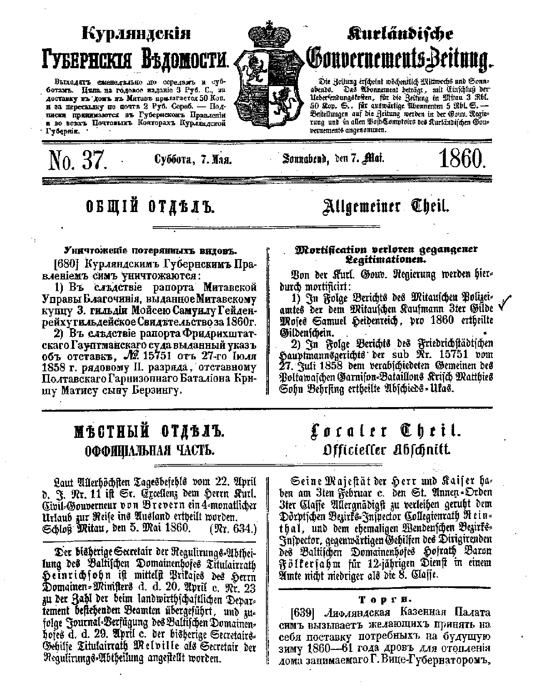

This database indexes and summarises over 2,000 entries relating to the Jewish Community in Courland (now part of Latvia) appearing in the official Russian Government Gazette (the Vedomosti). At present, it covers the period 1853 to 1861, but this project is ongoing and over time it is hoped to extend the material up to 1900.

Courland was a separate Gubernia (Province) of the Russian Empire from 1797 to 1918, with its own provincial Government based at Mitau (now Jelgava, Latvia). The Kurlyandskiya Gubernskiya Vedomosti, or Kurländische Gouvernements-Zeitung was the official newspaper published every Tuesday and Saturday throughout the year from 1852-1915. It contained public announcements, reports of Court cases, "wanted" lists of people sought by the authorities, details of arrivals in and departures from Courland, lists of appointments to various public bodies, together with a small number of private announcements and advertisements.
In the period up till 1866, most of the entries are in German, with a few in Russian and a sprinkling in Latvian. (From 1886 onwards, Russian was used exclusively). As can be seen from the sample page below, the German entries are in the old fashioned Fraktur script and with rather archaic spelling. The language is formal, with much use of elaborate standard formulas, and with a liberal admixture of Latin terms in the legal reports.
Detailed Description of Content
The database includes a summary of all entries referring to the Jewish Community in the relevant years. In the majority of cases, Jews are identified explicitly in the text (as "ebräisch" or Hebrew). Others have been recognised by their names. Where there is doubt whether a particular individual was Jewish, we have erred on the side of inclusion.
The first work that was done on the Vedomosti as a source for genealogical research was to extract and create a database of those individuals who were "without permit". That list has in its own introductory material and stands separately, although the entries will also appear in this database. The reason for this is that we have wanted to create a complete index of all entries relating to the Jews available from the Vedomosti during the relevant time frame. The historical importance of the Passlosen lists and the role they played in Jewish history was considered sufficiently important that we believe it justifies a free standing dedicated database. This is something that is being kept under review.
The database is clearly not a comprehensive guide to the Jewish population of Courland in the relevant years: it was obviously a matter of chance whether a particular family had the necessary brush with officialdom to be mentioned in the Vedemosti in a given year. Where there is an entry, however, the list shows that a named Jew was registered in a given locality on a given date and may provide a good deal of additional information:
Quite apart from references to specific individuals, the entries provide a fascinating insight into everyday life in 19th century Courland and can bring the people alive in a way that other databases do not.
The various fields in the database are:
There are some entries in the form "KGZ/zz/xx" without any numbers. This indicates an entry where we have received photocopies from Riga but they were undated and we have not been able to trace to originals. This in fact is all one sheet of names and the likely date is in or about 1855.
Towns listed in this column are given their modern name (where this can be identified) rather than the name used in the actual entry. A table listing the two versions is available.
Place names are given exactly as they appear in the entry, with the modern equivalent in brackets when it is significantly different. Several of the places mentioned will have a variety of different names – we have tried to use the name most likely to be familiar to English speakers.
Initials are used to refer to the subject of the entry. For example, the Comment for Israel Elias WEISS reads "Tax receipt issued to IEW by police has been found".
Addresses are given where relevant. Note that few Courland properties had a street address in the modern sense, though there are some references to property on "der grossen Strasse" (translated as "the High Street"). In most places, properties were simply given a number, which ran sequentially across the town as a whole. Mitau was divided into 4 Quarters, with properties numbered sequentially in each.
Money amounts are quoted in Roubles or Kopecks (1/100th of Rouble). It is hard to give exact equivalents in modern currency, but there are items in the vedomosti themselves which help to give an indication.
a table was published each fortnight giving maximum prices for bread and meat. In September 1859, for example, bread cost roughly 3 Kopecks for a loaf weighing 1 pound; veal cost 9-11 Kopecks per pound, while lamb was 7 Kopecks per pound for ordinary quality and 10 for best quality. (The pound used here was slightly smaller than our present pound). The penalty for selling goods at a higher price was 15 Rbl for a first offence and 30 for a second.
The annual budget for the city of Libau (Liepaja) published in March 1859, shows annual rentals of 75, 180, 225 , 350 and 400 Rbl for various houses rented by the city.
The return fare by coach between Libau and Polangen in 1860 was 2 Rbl 50 Kpk.
The central libraries in Latvia have an almost complete collection of the Courland Vedomosti. The originals are frail and are rapidly perishing as the newsprint from the time is not of particularly good quality. The Courland Research Group has a photocopied set of all Jewish entries between 1853 and 1860 [obtained from the copies in the library in Riga] and continues to receive material. Copies are also held by libraries in St Petersburg and Moscow and may be consulted there. We are not aware of any copies in Western libraries or collections.
We are looking to see if scans of pages relevant to individual genealogical searchers can be made available. The Group will do its best to answer queries about specific entries. These should be sent to Michael Whippman, including the word Vedemosti in the subject line.
A warm thank you to those who assisted in the databasing of this material, in particular Kathy Wolfson (USA), Charles Nam (USA) and Martha Lev-Zion (Israel) who transcribed parts of the material and entered it into the database. Max Michelson (USA) has contributed numerous translations and continues to provide support and advice. Particular thanks go to Dr. Tatjana Aleksejeva, an acknowledged expert in the history of the Jews of Courland, who has worked systematically through the originals, identifying and copying entries referring to the Jewish community. Her working collaboration on projects has been of the greatest assistance. This project also owes a debt of gratitude to the Centre for Judaic Studies at the University of Latvia, Riga whose remarkable director, Professor Ruvin Ferber has lent warm personal support not only for this particular project but for the work of the Courland Research Group generally.
The Courland Research Group also wishes to express its thanks to our web masters, Michael Tobias and Warren Blatt.
The Courland Research Group welcomes volunteers as does the Database Project. We have a full array of material that we are working to bring on line but we depend on the help and support of volunteers. The database has grown quickly because individual people of goodwill all around the world have worked together to make it happen. Please join us to share your skills or learn new ones. Contact Martha Lev-Zion if you are able to make a donation, and Constance Whippman if you would like to be part of our volunteer team. You will be warmly welcomed.
Constance Whippman, Database
Co-ordinator
Copyright ©2001, Courland Research Steering Committee and Michael Whippman
Last Updated: 21 February 2001 WSB